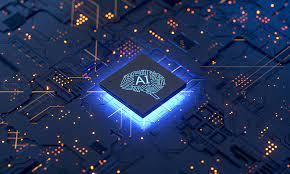

Artificial intelligence development
Links:
- index
- artificial intelligence development
- artificial intelligence techniques
- application of artificial intelligence

..
Neural networks
The study of artificial neural networks began during the decade preceding the establishment of AI research. In the 1960s, Frank Rosenblatt developed an important and new version; That is, the receptors . Paul Werbos developed the backpropagation algorithm for multilayer receptors in 1974, which led to a renaissance in research, neural networks, and "connectionism" in general in the mid-1980s. The Hopfield net, a form of attraction net, was first described by John Hopfield in 1982.
Among the structural networks developed are the feedforward network, the radial base network, the Kohonen self-organizing map and various recurrent neural networks. To show relevance Apply neural networks to the learning problem, using techniques such as Hebbian learning, and competitive learning. and relatively new designs such as temporal memory hierarchies and deep belief networks.
Specialized languages
AI researchers have developed several specialized languages for AI research:
IPL: is the first language designed for artificial intelligence applications. It includes features that support general problem-solving software, including lists, linked ideas, schemas (frames), dynamic memory allocation, data types, auto-recall, threaded retrieval, functions such as values, generators (streams), and multitasking. Consistently.
Lisp 511: It is a practical arithmetic system for computer programs built on the basis of lambda calculus. Threaded lists are one of the main data structures of the Lisp languages, and the source code for Lisp is itself a component of lists. As a result, Lisp programs can change source code as data structures, resulting in macro systems that allow programmers to create new structures or specialized programming embedded in Lisp. There are many dialects of Lisp in use today.
Prolog: is a graphical language that expresses programs in terms of relationships, and execution occurs ' by running queries about those relationships. Prolog is particularly useful for symbolic reasoning, database applications, and analysis. Prolog is widely used in artificial intelligence today.
STRIPS is a language for automated problem planning. It expresses the initial state, target states, and a set of actions. For each work, pre-determined conditions (what must be determined before the work is completed) and delayed conditions (what is determined after the work is completed).
Scheme: It is a mixture of procedural and logical languages. It gives a simplified procedural interpretation of logical sentences in contrast to the semantics that are explained by modular reasoning.
AI applications are also often written in standard languages such as C++, MATLAB and Lush languages designed for mathematics.
Artificial intelligence assessment
How can one determine whether the worker is intelligent or not? In 1950, Alan Turing proposed a general procedure for testing the intelligence of a worker now known as the Turing test. This procedure allows examining most of the major problems of artificial intelligence. But it is a very difficult challenge at the present time, and all the factors that came before it failed.
The AI can also be evaluated according to specific problems such as small problems in chemistry, handwriting recognition and games. These tests are called the expert Turing tests. The smaller the problems, the greater the number of achievable goals, and the greater the number of positive outcomes.
Artificial intelligence test results are classified into the following groups:
- Optimization : it could perform better..
- Strong Superhuman : Performing better than all humans..
- Less than human : worse than most humans perform.
- Superhuman : He performs better than most humans.